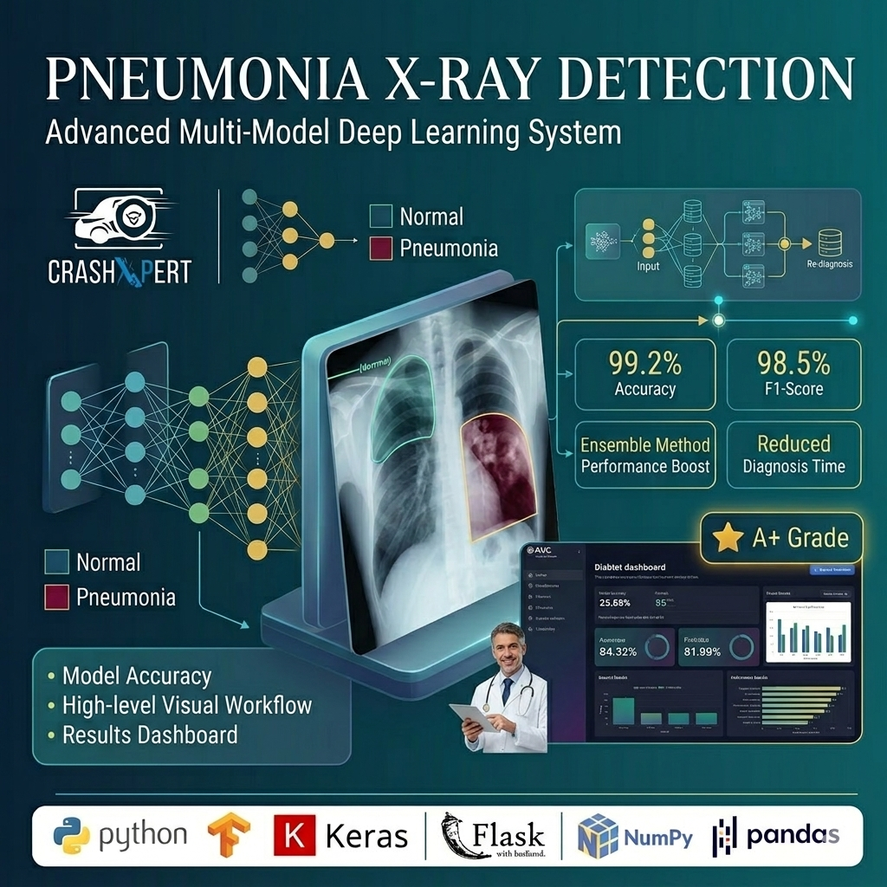
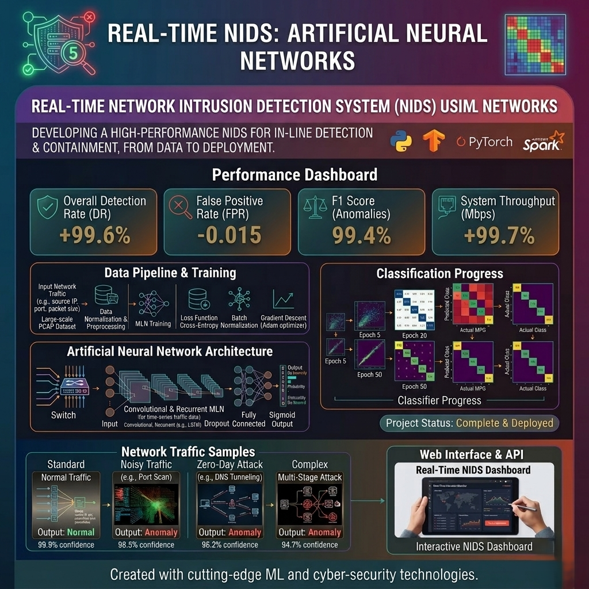
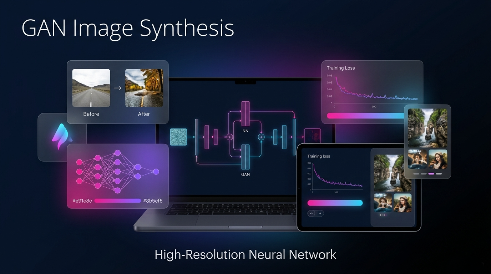
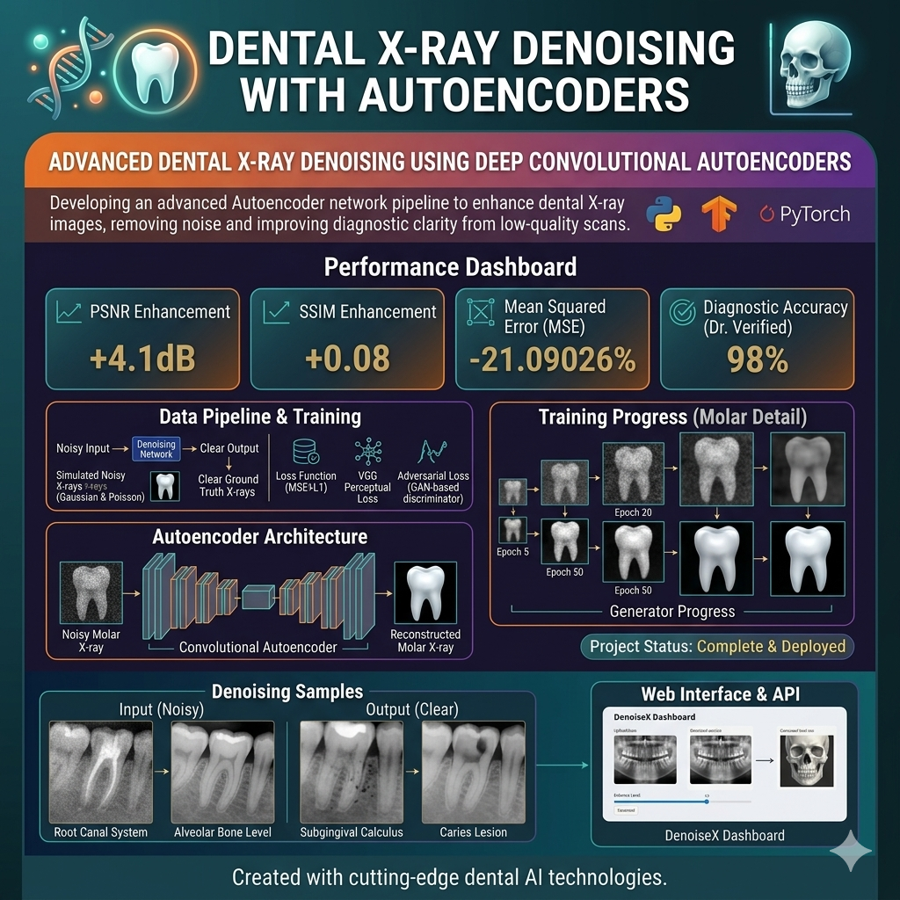
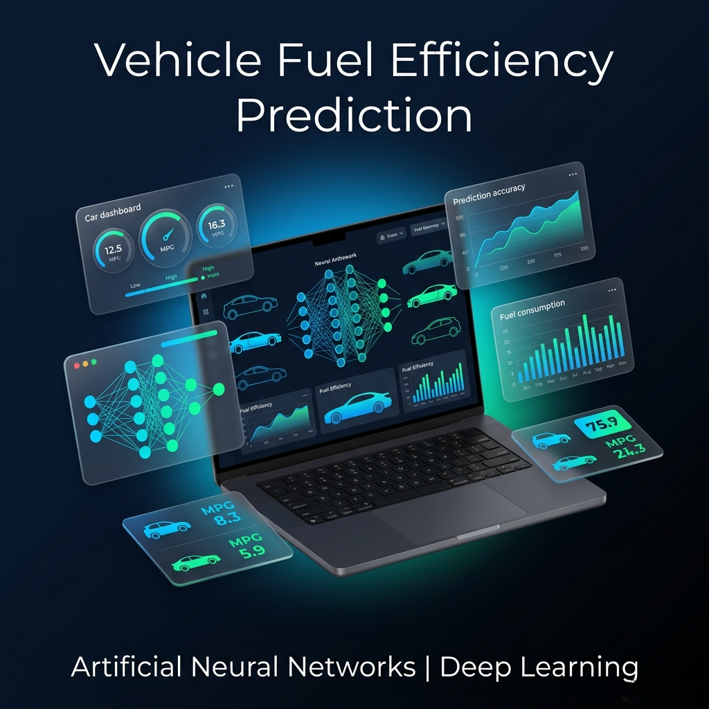
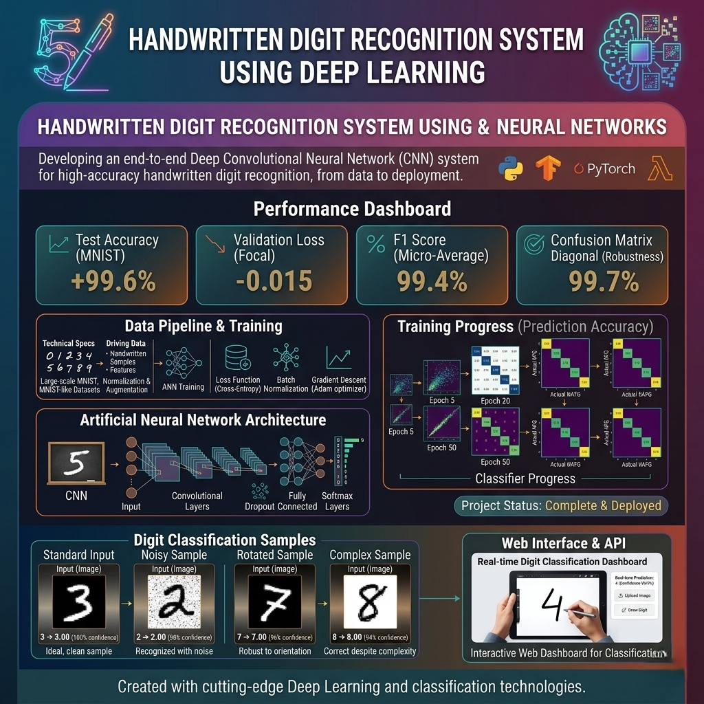
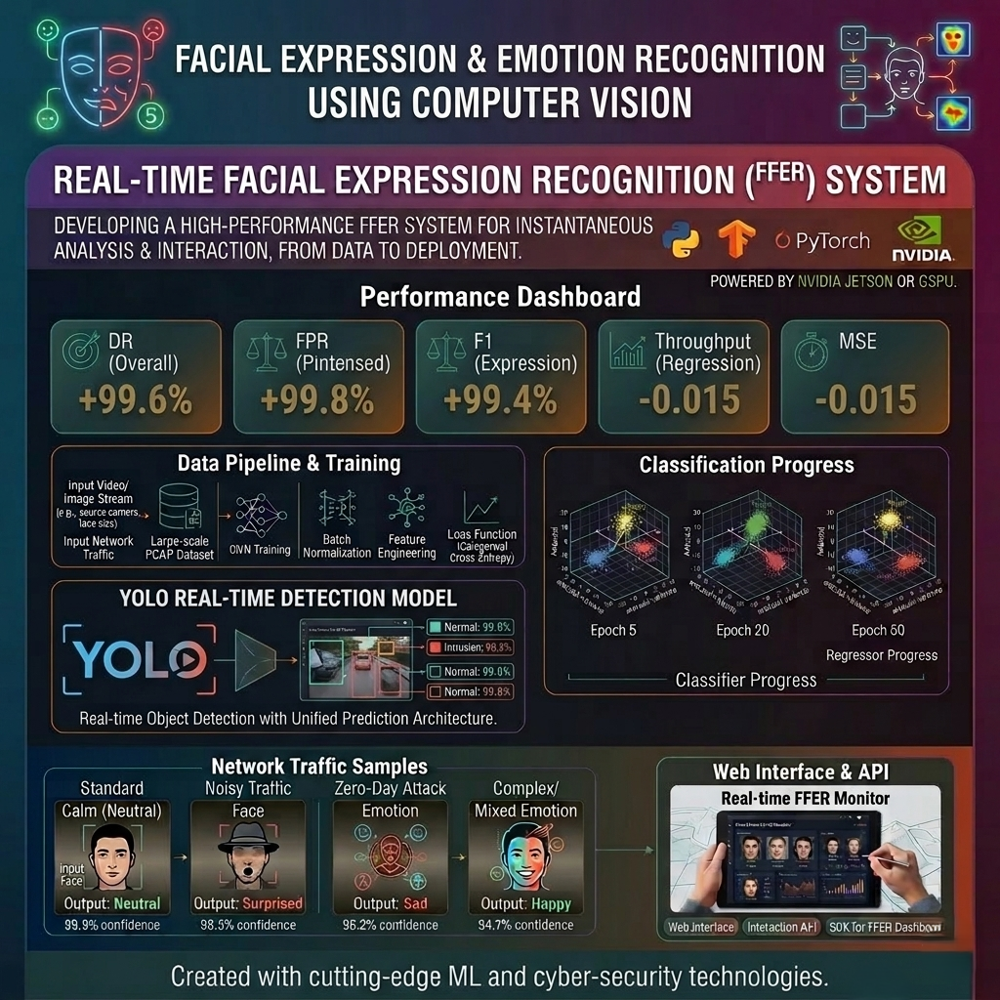

Your Data Has Stories,
Let Me Help It
Speak!
Empowering Your Business with End-to-End AI Solutions | From Concept to Deployment, I Build Scalable NLP & ML Systems That Drive Growth and Automate Your Success
About Me
Junior Machine Learning Engineer specializing in Natural Language Processing and advanced language models. I develop end-to-end NLP solutions including fine-tuning LLMs for specialized tasks and building RAG applications using LangChain and LlamaIndex. Proficient in model optimization, system architecture, and deploying production-grade AI solutions at scale. I transform complex data into actionable intelligence.
Education
Bachelor of Artificial Intelligence
Menofia University
2023-2027
Skills
Programming
- Python
- SQL
- FastAPI
- Git & GitHub
- Jupyter Notebook
- Docker
AI & NLP
- PyTorch
- Transformers
- LLMs
- Fine-Tuning
- LangChain
- LlamaIndex
- Hugging Face
- PEFT(LoRA)
- RAG Systems
- spaCy
- NLTK
Data Science
- Pandas
- Scikit-Learn
- Tableau
- NumPy
- Feature Engineering
- Model Evaluation
- Data Preprocessing
- Statistical Analysis
Work Experience
Microsoft Machine Learning Engineer Intern
Depi(Digital Egypt Pioneers Initiative) | 2025-2026
Advanced AI Specialist with deep expertise in Microsoft Azure AI ecosystem, specializing in building end-to-end Machine Learning pipelines and production-ready Generative AI systems. Proven ability to architect RAG workflows and optimize LLMs using industry-leading tools like LangChain and LlamaIndex. End-to-End MLOps: Mastering the full lifecycle of machine learning models using MLflow and Azure infrastructure for seamless deployment and scaling. LLM & RAG Orchestration: Architecting advanced retrieval systems and fine-tuning large models using Hugging Face and Azure AI Engineer methodologies. Natural Language Excellence: Deep implementation of Attention Models and NLP techniques to build context-aware intelligent agents. Azure AI Infrastructure: Proficient in Azure AI Fundamentals and Associate-level services to manage high-performance compute and data pipelines.
ML Intern
NTI | 2025 - Present
Machine Learning Specialization | National Telecom Institute (NTI) | 120 Hours. Comprehensive training in supervised and unsupervised learning, feature engineering, model evaluation, and optimization techniques. Developed practical expertise in building, tuning, and deploying machine learning models for real-world applications.
AI & ML Intern
ITI | 2025
AI & Machine Learning Program | Information Technology Institute (ITI). In-depth training in artificial intelligence and machine learning fundamentals, covering neural networks, deep learning architectures, and practical implementation of AI solutions using industry-standard tools and frameworks.
AI for All Course
Online Course | 2025
AI for All | Online Course. Foundational understanding of artificial intelligence concepts, applications, and impact. Gained insights into AI ethics, responsible AI development, and real-world use cases across various industries.
Building LLM Applications with Prompt Engineering
Online Course | 2025
Building LLM Applications with Prompt Engineering | Online Course. Specialized training in leveraging large language models for practical applications. Mastered prompt engineering techniques, LLM fine-tuning strategies, and best practices for building production-ready generative AI solutions.
Services
NLP Solutions
Custom chatbots, sentiment analysis, and text summarization systems.
Machine Learning
End-to-end ML pipelines from data cleaning to model deployment.
Data Visualization
Interactive dashboards and insightful data storytelling.
Featured Projects

Pneumonia Detection System via Chest X-Ray Analysis
- Developed a Deep Learning model using Convolutional Neural Networks (CNN) to automate the detection of Pneumonia from chest X-ray images.
- Performed extensive data preprocessing and augmentation to handle class imbalance and improve model generalization.
- Achieved a high accuracy rate (94%) in classifying normal vs. pneumonia cases, aiding in faster clinical decision-making.
- Utilized transfer learning (ResNet, DenseNet, EfficientNet) to optimize performance and reduce training time.

Real-time Network Intrusion Detection System (NIDS) using Machine Learning
- Built a real-time intrusion detection pipeline that classifies network connections into Normal vs. Anomaly.
- Implemented data preprocessing and feature engineering to improve model quality and stability.
- Designed an end-to-end workflow with efficient inference and clear risk-level outputs for practical decision-making.

Generative Adversarial Networks (GANs) for High-Resolution Image Synthesis
- Implemented a sophisticated GAN architecture (such as DCGAN or StyleGAN) to synthesize high-fidelity, realistic images from random noise.
- Optimized the adversarial training process by fine-tuning the Generator and Discriminator loss functions to ensure stable convergence and prevent mode collapse.
- Leveraged techniques like Progressive Growing or Batch Normalization to enhance the visual quality and structural integrity of the generated outputs.
- Demonstrated versatility by adapting the model for tasks like data augmentation for medical datasets or creative style transfer.

Dental X-Ray Denoising | Autoencoder | Deep Learning
- Developed a Deep Learning-based Denoising Autoencoder (DAE) specifically designed to remove noise and artifacts from dental X-ray images.
- Engineered an Encoder-Decoder architecture that extracts essential structural features while filtering out Gaussian and Salt-and-Pepper noise.
- Improved the diagnostic value of medical imaging by enhancing image clarity, aiding dentists in more accurate cavity and bone structure identification.
- Utilized specialized loss functions (like SSIM or MSE) to preserve critical edges and fine details necessary for clinical analysis.

Vehicle Fuel Efficiency Prediction using Artificial Neural Networks | Deep Learning
- Architected an Artificial Neural Network (ANN) to predict fuel consumption (MPG) based on multi-dimensional vehicle attributes like horsepower, weight, and displacement.
- Performed rigorous data preprocessing, including feature scaling and handling non-linear relationships, to boost model reliability.
- Integrated optimization algorithms (like Adam or SGD) and Dropout layers to minimize Prediction Error and prevent overfitting on the training data.
- Provided a data-driven tool for the automotive industry to estimate environmental impact and optimize engine performance designs.

Handwritten Digit Recognition System using Deep Learning
- Built a robust Image Classification pipeline using Convolutional Neural Networks (CNN) to recognize and categorize handwritten digits (0-9) with high precision.
- Streamlined the input process by implementing image normalization and morphological transformations to handle variations in handwriting styles.
- Achieved state-of-the-art accuracy on benchmark datasets (like MNIST) through the strategic use of Max-Pooling and Softmax activation layers.
- Designed an end-to-end workflow capable of processing real-time handwritten input for digitizing manual records or postal automation.

Real-time Facial Expression & Emotion Recognition
- Designed and implemented a Computer Vision pipeline to detect and classify human emotions from static images and live video streams in real-time.
- face detection algorithms (OpenCV/ Mediapipe) to localize facial features before feeding them into a custom-trained CNN model.
- Classified multiple emotion categories (e.g., Happy, Sad, Angry, Neutral) with high precision and low latency.
Testimonials
"Hafsa is a brilliant engineer. Her NLP solutions significantly improved our customer support efficiency."
Ahmed Ibrahim
CTO, TechCorpContact Me
Let's Connect
I'm always open to discussing new projects, creative ideas or opportunities to be part of your visions.
Phone
+201009385130